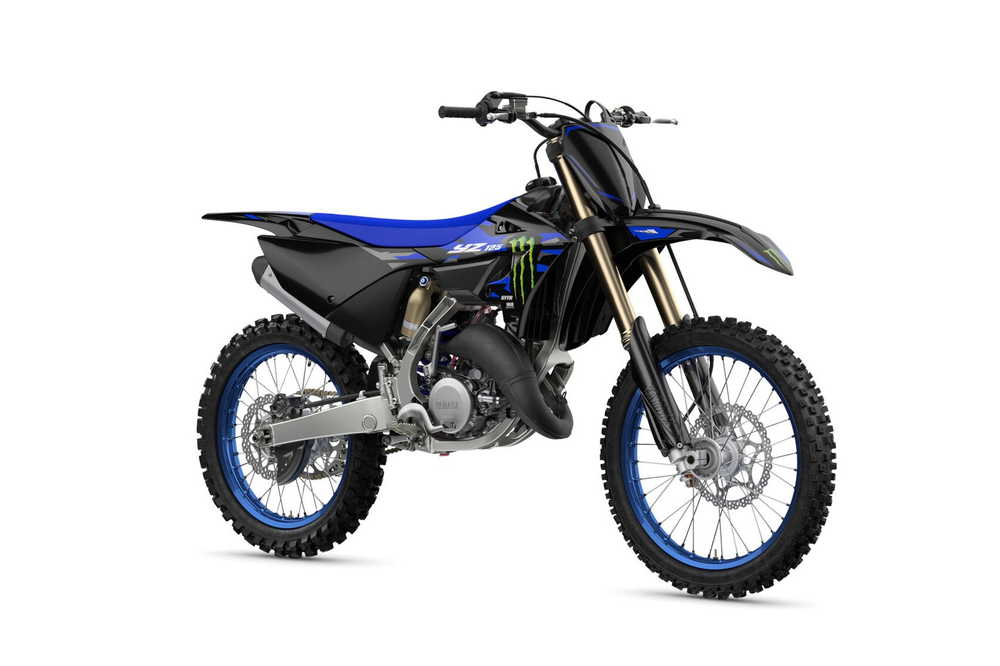

Yamaha YZ125
The Yamaha YZ125 is a high-performance 2-stroke motocross bike built for pure racing. With its ultra-light chassis, responsive power delivery, and aggressive styling, the YZ125 continues to be the weapon of choice for riders chasing podiums in the 125cc class.
Specifications
- Engine displacement: 125 cc
- Engine type: 2-stroke, liquid-cooled, single-cylinder
- Fuel system: Keihin PWK38 carburetor
- Transmission: 6-speed
- Starter: Kick start
Chassis & Suspension
- Frame: Aluminum semi-double cradle
- Front suspension: 48 mm KYB USD fork, fully adjustable
- Rear suspension: KYB monoshock, fully adjustable
- Front brake: 270 mm disc
- Rear brake: 240 mm disc
Dimensions & Weight
- Seat height: 975 mm
- Wet weight: approx. 95 kg
- Fuel tank capacity: 7 liters
Key Features
- High-revving 2-stroke engine with crisp throttle response
- Super lightweight chassis for agile cornering
- Race-ready KYB suspension front and rear
- Redesigned intake system for improved airflow
- Sharp YZ styling with slim bodywork and new graphics
Price: CHF 8,290.–
← Back to overview